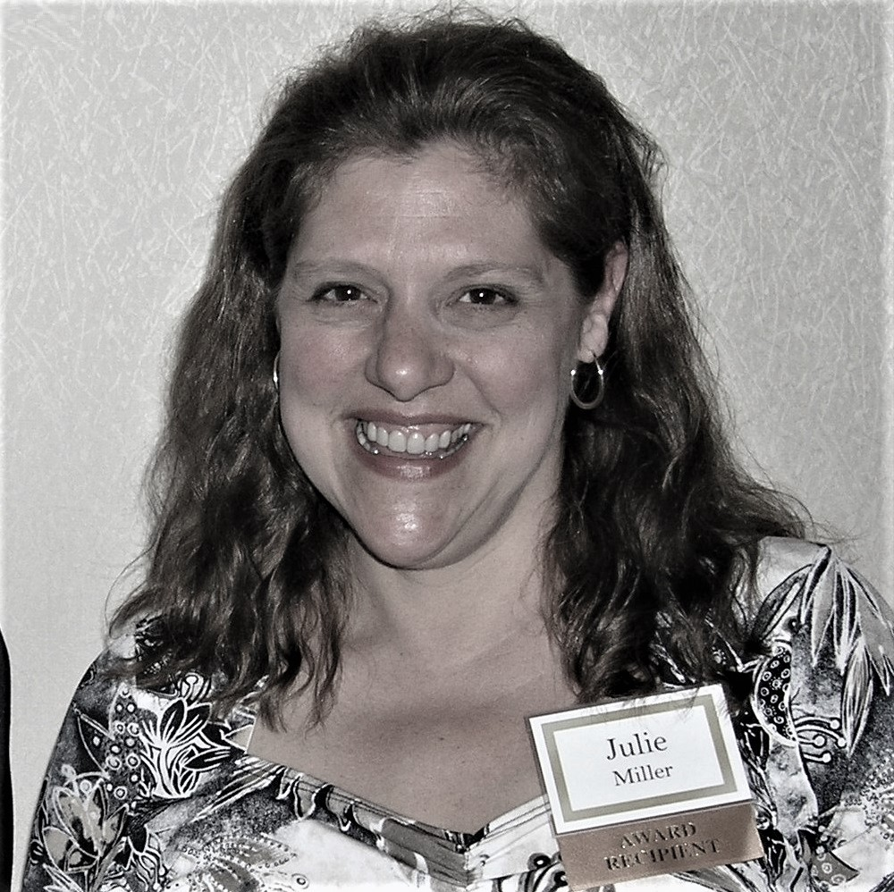

"Libraries remind us that truth isn't about who yells the loudest but who has the right information."
-Barack Obama
Hello,
Welcome to my website!
I am an enthusiastic, lifelong learner with an analytical mind. Currently, I am pursuing a masters degree in library and information science with a concentration in archives at Wayne State University (WSU). Prior to WSU, I worked as an analytical chemist in the chemical industry. To learn more, visit the three sections on the homepage: librarian & archivist resume, MLIS portfolio and chemist resume.